![]()
# the numerical summary produced by a piped series of functions;
# create a summary of the data (i.e. number of replicates per species)
# used for (A), (B) and (C), below
iris.cnt <- iris %>%
count(Species) %>% # automagically creates a column, n, with the counts
mutate(prop = n / sum(n)) # creates the relative proportion of each species3. Exploring with figures
Extending exploratory data analysis with figures
In this Chapter
- The diversity of graphs used to communicate statistical results
- How to select the right graph for any particular dataset
- Additional packages available to extend ggplot’s functionality
Tasks to complete in this Chapter
- Task C 1-2

Introduction
Exploratory data analysis (EDA) is a crucial step in most, if not all, biological and ecological studies, and graphs are an essential tool for exploring, visualising, and communicating complex data. Among the most powerful and versatile graphing tools available to us is ggplot2, which provides an extensive range of graph types that can be customised to meet the needs of any analysis.
From the simple bar and line graphs to the more complex box-and-whisker and heatmaps, ggplot2 offers an extensive range of graphing styles that can help us to gain insights into the data and communicate our findings to others.
We will encounter graph types such as scatter plots, box plots, and histograms, all of which can reveal patterns and trends in the data. We will also explore more advanced graph types such as maps, which can be used to display spatial data, and dendrograms and ordination biplots graphs, which can be used to analyse complex relationships between multiple variables.
Through this exploration of ggplot2, we will gain a deeper understanding of the data by supplementing the analyses in Chapter 2 with figures to uncover hidden patterns and trends, and to communicate our findings to others in a clear and compelling way.
Let’s explore some figure types to use for statistical summaries. These figures can be used to accompany the statistics computed in Chapter 2. Note that I provide some basic examples of commonly encountered figure types only; this Chapter does not pretend to offer solutions for every conceivable problem about how to construct our figures. For such high-level information, or for even greater variety of figure types, please consult the following sources:
- ggplot2 by Hadley Wickham et al.
- ggplot2: Elegant Graphics for Data Analysis, v.3 by Hadley Wickham, et al.
- R Graphics Cookbook, 2nd edition by Winston Chang
- A Comprehensive Guide on ggplot2 in R by Devashree Madhugiri
- ggplot2 extensions
- The R Graph Gallery by Yan Holtz
Summary statistics
As we have already seen, summary statistics such as the mean, median, and standard deviation can be calculated for various data types. These statistics can help us understand the central tendency, variability, and distribution of the data.
But summary statistics are not enough.
Do it now
Retrieve these data and calculte the mean and standard deviation of the variables.
Then make a scatter plot. What do you see?
What do you conclude?
In reports of summary statistics, we may therefore wish to include visuals as well.
Frequency distributions
Frequency distributions are typically displayed as histograms. Histograms are a type of graph that displays the frequency of occurrences of observations forming a continuous variable. To construct a histogram, the data are divided into intervals, or bins, and the number of occurrences of observations within each bin is tallied. The height of each bar (y-axis) in the histogram represents the number of observations falling within that bin. The x-axis displays the bins, arranged such that the intervals they represent go from small to large on an ordinal scale. The intervals should be chosen carefully, such that they best represent the distribution of the data without being too narrow or too wide. Histograms can be used to quickly assess the distribution of the data, identify any skewness or outliers, and provide a visual representation of the central tendency and variation of the data.
We have a choice of absolute (Figure 1 A) and relative (Figure 1 B-C) frequency histograms. In absolute frequency distributions, the sum of all the counts per bin will add up to the total number of obervations. In relative frequency distributions the the frequency of each category is expressed as a proportion or percentage of the total number of observations, and hence the sum of the relative counts per bin is 1. This is useful if two populations being compared have different numbers of observations. There’s also the empirical cumulative distribution function (ECDF) (Figure 1 D) that shows the cumulative proportion of observations that fall below or equal to a certain value. See the Old Faithful data, for example. The eruptions last between 1.6 and 5.1 minutes. So, we create intervals of time spanning these times, and within each count the number of times an event lasts as long as denoted by the intervals. Here we might choose intervals of 1-2 minutes, 2-3 minutes, 3-4 minutes, 4-5 minutes, and 5-6 minutes. The ggplot2 geom_histogram() function automatically creates the bins, but we may specify our own. It is best to explain these principles by example (Figure 1 A-D).
# a normal frequency histogram, with count along y
hist1 <- ggplot(data = faithful, aes(x = eruptions)) +
geom_histogram(colour = "black", fill = "salmon", alpha = 0.6) +
labs(title = "'Vanilla' histogram",
x = "Eruption duration (min)",
y = "Count") + theme_pubclean()
# when the binwidth is 1, the density histogram *is* the relative
# frequency histogram
hist2 <- ggplot(data = faithful, aes(x = eruptions)) +
geom_histogram(aes(y = ..density..),
position = 'identity', binwidth = 1,
colour = "black", fill = "salmon", alpha = 0.6) +
labs(title = "Relative frequency",
x = "Eruption duration (min)",
y = "Relative\ncontribution") + theme_pubclean()
# if binwidth is something other than 1, the relative frequency in
# a histogram is ..density.. * binwidth
hist3 <- ggplot(data = faithful, aes(x = waiting)) +
geom_histogram(aes(y = 0.5 * ..density..),
position = 'identity', binwidth = 0.5,
colour = "salmon", fill = "salmon", alpha = 0.6) +
labs(title = "Relative frequency",
x = "Waiting time (min)",
y = "Relative\ncontribution") + theme_pubclean()
# ECDF
hist4 <- ggplot(data = faithful, aes(x = eruptions)) +
stat_ecdf() +
labs(title = "ECDF",
x = "Eruption duration (min)",
y = "Relative\ncontribution") + theme_pubclean()
ggarrange(hist1, hist2, hist3, hist4, ncol = 2, nrow = 2, labels = "AUTO")
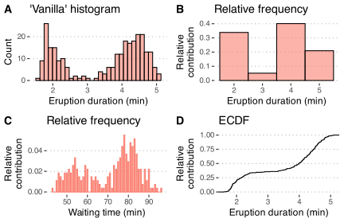
As we see above, ggplot2 can automatically construct a frequency histogram with the geom_histogram() function. We can also manually create a frequency distribution with the cut() function.
What if we have continuous data belonging with multiple categories? The iris dataset provides a nice collection of measurements that we may use to demonstrate a grouped frequency histogram. These data are size measurements (cm) of the variables sepal length and width and petal length and width, respectively, for 50 flowers from each of three species of Iris. The species are Iris setosa, I. versicolor, and I. virginica. The figures are shown in Figure 2.
# first we make long data
iris.long <- iris %>%
gather(key = "variable", value = "size", -Species)
ggplot(data = iris.long, aes(x = size)) +
geom_histogram(position = "dodge", # ommitting this creates a stacked histogram
colour = NA, bins = 20,
aes(fill = Species)) +
facet_wrap(~variable) +
labs(title = "Iris data",
subtitle = "Grouped frequency histogram",
x = "Size (cm)",
y = "Count") +
theme_pubclean()
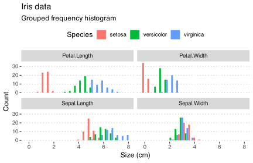
Bar graphs
Bar graphs are popular among biologists and ecologists. Often used to represent discrete categories or groups, bar graphs provide a visual representation of mean values for each category, thus allowing us to identify trends, patterns, and differences across data sets or experimental treatments. In complex biological systems, such as population dynamics, species abundance, or ecological niches, bar graphs offer a clear and concise way to depict the interactions and variations among different elements. Importantly, bar graphs may also include some indication of variation, such as error bars (a term that also applies when the variation statistic used is the standard deviation) or other visual cues to denote the range of variation within the data, such as confidence intervals. This additional layer of information not only highlights the variability inherent in biological and ecological data but also aids in the interpretation of results and the overall understanding of the phenomena under investigation. Note that it is not incorrect to plot the median in bar graphs, but bat graphs is typically reserved for displaying the mean. For plotting the median, see Section 2.3, below.
A naïve application of bar graphs is to indicate the number of observations within several groups. Although this can be presented numerically in tabular form, sometimes one might want to create a bar or pie graph of the number of occurrences in a collection of non-overlapping classes or categories. Both the data and graphical displays will be demonstrated here.
The first case is of a variation of frequency distribution histograms, but here showing the raw counts per each of the categories that are represented in the data—unlike ‘true’ frequency histograms in Section 2.1 that divide data into bins, this one takes a cruder approach. The count within each of the categories sums to the sample size, \(n\). In the second case, we may want to report those data as proportions. Here we show the frequency proportion in a collection of non-overlapping categories. For example, we have a sample size of 12 (\(n=12\)). In this sample, two are coloured blue, six red, and five purple. The relative proportions are \(2/12=0.1666667\) blue, \(6/12=0.5\) red, and \(5/12=0.4166667\) purple. The important thing to note here is that the relative proportions sum to 1, i.e. \(0.1666667+0.5+0.4166667=1\). These data may be presented as a table or as a graph.
In Figure 3 I demonstrate the numerical and graphical summaries using the built-in iris data (I’d not do this in real life, it’s silly; just write it out in the text of the Methods section):
# a stacked bar graph with the cumulative sum of observations
plt1 <- ggplot(data = iris.cnt, aes(x = "", y = n, fill = Species)) +
geom_bar(width = 1, stat = "identity") +
labs(title = "Stacked bar graph", subtitle = "cumulative sum",
x = NULL, y = "Count") +
theme_pubclean() + scale_color_few() +
scale_fill_few()
# a stacked bar graph with the relative proportions of observations
plt2 <- ggplot(data = iris.cnt, aes(x = "", y = prop, fill = Species)) +
geom_bar(width = 1, stat = "identity") +
scale_y_continuous(breaks = c(0.00, 0.33, 0.66, 1.00)) +
labs(title = "Stacked bar graph", subtitle = "relative proportions",
x = NULL, y = "Proportion") +
theme_pubclean() + scale_color_few() +
scale_fill_few()
# a basic pie chart
plt3 <- plt1 + coord_polar("y", start = 0) +
labs(title = "Friends don't let...", subtitle = "...friends make pie charts",
x = NULL, y = NULL) +
scale_fill_brewer(palette = "Blues") +
theme_minimal()
# if you seriously want a pie chart, rather use the base R function, `pie()`
# here now a bar graph...
# the default mapping of `geom_bar` is `stat = count`, which is a
# bar for each fo the categories (`Species`), with `count` along y
plt4 <- ggplot(data = iris, aes(x = Species, fill = Species)) +
geom_bar(show.legend = FALSE) +
labs(title = "Side-by-side bars", subtitle = "n per species", y = "Count") +
theme_pubclean() + scale_color_few() +
scale_fill_few()
ggarrange(plt1, plt2, plt3, plt4, nrow = 2, ncol = 2, labels = "AUTO")
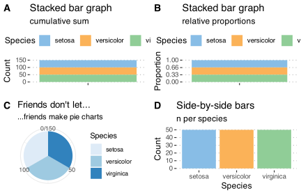
Now I’ll demonstrate more realistic bar graphs. We stay with the iris data (Figure 4):
iris |>
pivot_longer(cols = Sepal.Length:Petal.Width,
names_to = "variable",
values_to = "size") |>
group_by(Species, variable) |>
summarise(mean = round(mean(size), 1),
sd = round(sd(size), 1), .groups = "drop") |>
ggplot(aes(x = Species, y = mean)) +
geom_bar(position = position_dodge(), stat = "identity",
col = "black", fill = "salmon", alpha = 0.4) +
geom_errorbar(aes(ymin = mean - sd, ymax = mean + sd),
width = .2) +
facet_wrap(~variable,
scales = "free") +
ylab("Size (mm)") +
theme_minimal()
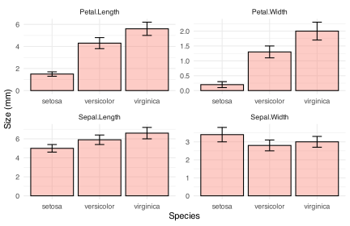
Box plots
A box plot provides a graphical summary of the distribution of data. They allow us to compare the medians, quartiles, and ranges of the data for multiple groups, and identify any differences or similarities in the distributions. For example, box plots can be used to compare the body size distributions of different species, or to compare the reproductive output of different populations. Additionally, box plots can be used to identify outliers and other anomalies in the data, which may be indicative of underlying ecological processes or environmental factors.
Box plots plots are traditionally used to display data that are not normally distributed, but I like to use them for any old data, even normal data. I prefer these over the old-fashioned bar graphs (seen in Section 2.2). As a variation of the basic box-and-whisker plot, I also quite like to superimpose a jittered scatter plot of the raw data on each bar.
I create a simple example using the msleep dataset (Figure 5). Additional examples are provided in Chapter 2.
msleep |>
ggplot(aes(x = vore, y = sleep_total)) +
geom_boxplot(colour = "black", fill = "salmon", alpha = 0.4,
outlier.color = "red3", outlier.fill = "red",
outlier.alpha = 1.0, outlier.size = 2.2) +
geom_jitter(width = 0.10, fill = "blue", alpha = 0.5,
col = "navy", shape = 21, size = 2.2) +
labs(x = "'-vore'",
y = "Sleep duration (hr)") +
theme_pubclean()
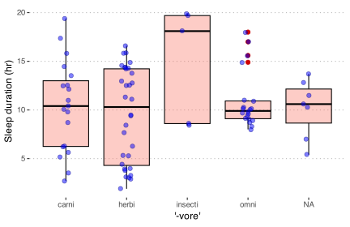
Box plots are sometimes called box-and-whisker plots. The keen eye can glance the ‘shape’ of the data distribution; they provide an alternative view to that given by the frequency distribution. There is a lot of information in these graphs, so let’s see what’s there. From the geom_boxplot documentation, which says it best (type ?geom_boxplot):
“The lower and upper hinges correspond to the first and third quartiles (the 25th and 75th percentiles).”
“The upper whisker extends from the hinge to the largest value no further than 1.5 * IQR from the hinge (where IQR is the inter-quartile range, or distance between the first and third quartiles). The lower whisker extends from the hinge to the smallest value at most 1.5 * IQR of the hinge. Data beyond the end of the whiskers are called ‘outlying’ points and are plotted individually.”
“In a notched box plot, the notches extend 1.58 * IQR / sqrt(n). This gives a roughly 95% confidence interval for comparing medians.”
Here be more examples (Figure 6), this time of notched box plots:
library(ggsci) # for nice colours
ggplot(data = iris.long, aes(x = Species, y = size)) +
geom_boxplot(alpha = 0.4, notch = TRUE) +
geom_jitter(width = 0.1, shape = 21, fill = NA,
alpha = 0.4, aes(colour = as.factor(Species))) +
facet_wrap(~variable, nrow = 2) +
scale_color_npg() +
labs(y = "Size (cm)") +
guides(colour = FALSE) +
theme(axis.text.x = element_text(face = "italic"))
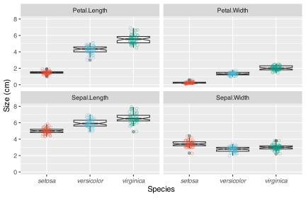
Density plots
Often when we are displaying a distribution of data we are interested in the ‘shape’ of the data more than the actual count of values in a specific category, as shown by a standard histogram. When one wishes to more organically visualise the frequency of values in a sample set a density graphs is used. These may also be thought of as smooth histograms. These work well with histograms and rug plots, as we may see in the figure below. It is important to note with density plots that they show the relative density of the distribution along the \(y\)-axis, and not the counts of the data. This can of course be changed, as seen below, but is not the default setting. Sometimes it can be informative to see how different the count and density distributions appear.
Figure 7 shows examples af density plots:
# a normal density plot
dens1 <- ggplot(data = faithful, aes(x = eruptions)) +
geom_density(colour = "black", fill = "salmon", alpha = 0.6) +
labs(title = "Old Faithful data",
subtitle = "A vanilla density plot",
x = "Eruption duration (min)",
y = "Density") + theme_pubr()
# a density and rug plot combo
dens2 <- ggplot(data = faithful, aes(x = eruptions)) +
geom_density(colour = "black", fill = "salmon", alpha = 0.6) +
geom_rug(colour = "red") +
labs(title = "Old Faithful data",
subtitle = "A density and rug plot",
x = "Eruption duration (min)",
y = "Density") + theme_pubr()
# a relative frequency histogram overlayed with a density plot
dens3 <- ggplot(data = faithful, aes(x = eruptions)) +
geom_histogram(aes(y = ..density..),
position = 'identity', binwidth = 1,
colour = "black", fill = "turquoise", alpha = 0.6) +
geom_density(colour = "black", fill = "salmon", alpha = 0.6) +
labs(title = "Old Faithful data",
subtitle = "Relative frequency with density",
x = "Eruption duration (min)",
y = "Density") + theme_pubr()
# a normal frequency histogram with density overlayed
# note that the density curve must be adjusted by
# the number of data points times the bin width
dens4 <- ggplot(data = faithful, aes(x = eruptions)) +
geom_histogram(aes(y = ..count..),
binwidth = 0.2, colour = "black", fill = "turquoise", alpha = 0.6) +
geom_density(aes(y = ..density.. * nrow(datasets::faithful) * 0.2), position = "identity",
colour = "black", fill = "salmon", alpha = 0.6) +
labs(title = "Old Faithful data",
subtitle = "Frequency with density",
x = "Eruption duration (min)",
y = "Count") + theme_pubr()
ggarrange(dens1, dens2, dens3, dens4, ncol = 2, nrow = 2, labels = "AUTO")
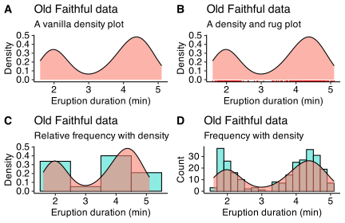
Violin plots
We may combine the box plot and density graph concepts into a new figure type. They can become quite snooty and display more information in more informative ways than vanilla box plots. These are known as violin plots and are very useful when we want to show the distribution of multiple categories of a continuous variate alongside one another.
Violin plots show the same information as box plots but take things one step further by allowing the shape of the box plot to also show the distribution of the continuous data within the sample sets. They show not only central tendencies (like median) but also the full distribution, including possible multimodal or skewed characteristics.
One needs to install additional packages to make then, such as the package ggstatplot. This package offers many non-traditional options for graphical statistical summaries. Here, the violin plot includes the following features:
Violins The vertical, symmetrical, and mirrored shapes represent the estimated probability density of the data at different values. The wider the violin at a given point, the higher the density of data at that value.
Box plot A box plot can be embedded within the violin plot to show the median, quartiles, and the possible outliers.
Statistical annotations The violin plots offered by ggstatplot accommodate various statistical annotations such as mean, median, confidence intervals, or p-values, depending on the your needs.
We will use the iris data below to highlight the different types of violin plots one may use (Figure 8):
library(ggstatsplot)
set.seed(123) # for reproducibility
# plot
ggstatsplot::ggbetweenstats(
data = iris,
x = Species,
y = Sepal.Length,
ylab = "Sepal length (cm)",
title = "Distribution of sepal length across the three *Iris* species"
)
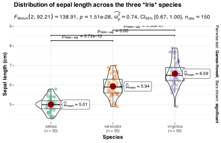
Here’s another verson of the iris data analysed with violin plots (Figure 9):
vio1 <- ggplot(data = iris, aes(x = Species, y = Sepal.Length, fill = Species)) +
geom_violin() +
labs(title = "Iris data",
subtitle = "Basic violin plot", y = "Sepal length (cm)") +
theme_pubr() +
theme(axis.text.x = element_text(face = "italic"),
legend.position = "none")
# A violin plot showing the quartiles as lines
vio2 <- ggplot(data = iris, aes(x = Species, y = Sepal.Length, fill = Species)) +
geom_violin(show.legend = FALSE, draw_quantiles = c(0.25, 0.5, 0.75)) +
labs(title = "Iris data",
subtitle = "Violin plot with quartiles", y = "Sepal length (cm)") +
theme_pubr() +
theme(axis.text.x = element_text(face = "italic"),
legend.position = "none")
# Box plots nested within violin plots
vio3 <- ggplot(data = iris, aes(x = Species, y = Sepal.Length, colour = Species)) +
geom_violin(fill = "grey70") +
geom_boxplot(width = 0.1, colour = "grey30", fill = "white") +
labs(title = "Iris data",
subtitle = "Box plots nested within violin plots", y = "Sepal length (cm)") +
theme_pubr() +
theme(axis.text.x = element_text(face = "italic"),
legend.position = "none")
# Boxes in violins with the raw data jittered about
vio4 <- ggplot(data = iris, aes(x = Species, y = Sepal.Length, colour = Species)) +
geom_violin(fill = "grey70") +
geom_boxplot(width = 0.1, colour = "black", fill = "white") +
geom_jitter(shape = 1, width = 0.1, colour = "red", alpha = 0.7, fill = NA) +
labs(title = "Iris data",
subtitle = "Violins, boxes, and jittered data", y = "Sepal length (cm)") +
theme_pubr() +
theme(axis.text.x = element_text(face = "italic"),
legend.position = "none")
ggarrange(vio1, vio2, vio3, vio4, ncol = 2, nrow = 2, labels = "AUTO")
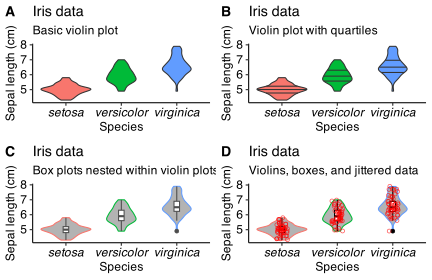
The ggpubr package also provides many convenience functions for the drawing of publication quality graphs, including violin plots.
Bivariate plots
Various methods exist to illustrate the relationships between two variables, whether they involve measurements within a single species, like petal length and width in the Iris dataset, or to a response such as size as it varies with time. The scatter plot is a well-known example of a bivariate graph that effectively displays these relationships. When time serves as the \(x\)-axis in a scatter plot, it becomes a time-series plot (generically known as a line graph), adept at capturing temporal patterns. Moreover, heatmaps and Hovmöller Diagrams are also frequently employed to represent temporal data, with each offering unique advantages in visualising the relationship between variables. By exploring these diverse graphical tools, we can elucidate the connections among distinct data points and uncover valuable insights into the underlying patterns and trends.
Scatter plots
The relationship between two continuous variables is typically displayed with scatter plots. In a scatter plot, each data point is represented by a dot or other symbol plotted on a Cartesian coordinate system, with one variable mapped to the \(x\)-axis and the other to the \(y\)-axis. One may choose to fit a best fit line through these points, but displaying the scatter of points is typically enough. In scatter plots, the points are not connected by lines, and the use of discrete points causes us to not assume a specific order or continuity in the data between ‘consecutive’ points on the graph. Also, a scatter plot typically does not require that the \(x\)-axis is independent.
The most basic use of scatter plots is the following:
Exploratory data analysis Scatter plots are useful in the initial exploration of data sets. They help us identify patterns and relationships that might warrant further investigation using more advanced statistical techniques.
Identifying trends One can identify whether there is a positive, negative, or no apparent trend between the two variables by observing the overall pattern (slope) of an imaginary or real line fitted to the data points. The detection of trends is something we will encounter in Chapter 9 on Simple linear regressions.
Identifying correlations Scatter plots can be used to visually assess the correlation between two variables. A strong positive correlation will result in data points forming a line or curve sloping upward, while a strong negative correlation will result in data points forming a line or curve sloping downward. A weak or no correlation will result in a more scattered and less structured pattern. We will discover more about this in Chapter 10 on Correlation.
Assessing clustering Scatter plots can reveal natural groupings or clusters of data points, which can be helpful in understanding the structure of the data or identifying potential subgroups for further analysis.
All of these applications of scatter plots are shown in Figure 10. In Figure 10 I show the relationship between two (matched) continuous variables. The statistical strength of the relationship can be indicated by a correlation (no causal relationship implied as is the case here) or a regression (when a causal link of \(x\) on \(y\) is demonstrated), and the grouping structure is clearly indicated with colour.
plt1 <- ggplot(data = iris, aes(x = Petal.Length, y = Petal.Width, colour = Species)) +
geom_point() +
labs(x = "Petal length (cm)", y = "Petal width (cm)") +
theme(legend.position = c(0.22, 0.75)) +
scale_color_fivethirtyeight() +
scale_fill_fivethirtyeight() +
theme_minimal()
plt2 <- ggplot(data = iris, aes(x = Petal.Length, y = Petal.Width, colour = Species)) +
geom_point() +
geom_smooth(method = "lm", se = FALSE, show.legend = FALSE) +
scale_color_fivethirtyeight() +
scale_fill_fivethirtyeight() +
labs(x = "Petal length (cm)", y = "Petal width (cm)") +
theme_minimal()
ggarrange(plt1, plt2, ncol = 2, nrow = 1, labels = "AUTO",
common.legend = TRUE)
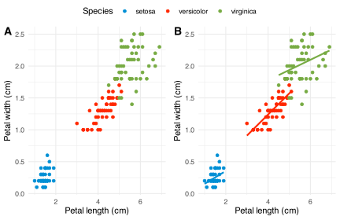
Scatter plots may also indicate some of the following properties of our datasets, which make them useful as a diagnostic tool in inferential data analysis, specifically when it comes to assessing assumptions about our data:
Detecting outliers Outliers are data points that deviate significantly from the overall pattern of the data. Scatter plots can help identify such points that might warrant further investigation or indicate problems in data collection.
Assessing linearity Scatter plots can reveal whether the relationship between two variables is linear or nonlinear. A linear relationship will result in data points forming a straight line, while a nonlinear relationship will result in data points forming a curve or more complex pattern.
We will encounter these uses in later Chapters dealing with inferential statistics.
Line graphs
A line graph connects data points with lines, typically emphasising a continuous relationship or a sequence over time or some other continuous scale. The \(x\)-axis often represents time (or another independent variable), while the \(y\)-axis represents the other variable (usually the dependent variable). Line graphs are particularly useful for tracking changes, trends, or patterns over time and for comparing multiple data series. They suggest a more explicit connection between data points, making it easier to observe fluctuations and the overall direction of the data.
We typically encounter line graphs in visual displays of time-series. One might include a point for each observation in time, but it may be omitted. The important thing to note is that a line connects each consecutive observation to the next, indicating the continuity of time. It is a useful tool for exploring trends, patterns, and seasonality in data. For example, a time-series plot can be used to visualise the seasonal trends in temperature over an annual cycle (Figure 11). In this example, points are not used at all, and I opt instead for a stepped line that suggests continuity and yet maintain a ‘discrete’ measure per month (i.e. ignoring the higher frequency daily and finer scale variations within a month).
library(lubridate)
read_csv("../../data/SACTN_SAWS.csv") |>
mutate(month = month(date)) |>
group_by(site, month) |>
dplyr::summarise(temp = mean(temp, na.rm = TRUE)) |>
ggplot(aes(x = month, y = temp)) +
geom_step(colour = "red4") +
scale_x_continuous(breaks = c(1, 3, 5, 7, 9, 11)) +
xlab("Month") + ylab("Temperature (°C)") +
facet_wrap(~site, ncol = 5) +
theme_minimal()
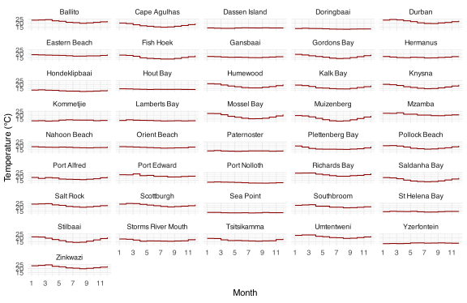
Heatmaps and Hovmöller Diagrams
We can extend the time series line graph to two dimensions. A heatmap is a raster representation of data where the values in a matrix are represented as colours. We will see some heatmaps in Chapter 10 on Correlations. A special kind of heatmap is a calendar heatmap, which is a visualisation technique that uses a calendar layout to show patterns in data over time. For example, a calendar heatmap can be used to show the daily time series or climatologies of temperature or some other environmental variable that varies seasonally (Figure 12).
# Load the function to the local through Paul Bleicher's GitHub page
source("https://raw.githubusercontent.com/iascchen/VisHealth/master/R/calendarHeat.R")
temps <- heatwaveR::sst_WA |>
filter(t >= "2010-01-01" & t <= "2019-12-31") |>
mutate(weekday = wday(t),
weekday_f = wday(t, label = TRUE),
week = week(t),
month = month(t, label = TRUE),
year = year(t)) |>
group_by(year, month) |>
mutate(monthweek = 1 + week - min(week))
ggplot(temps, aes(monthweek, weekday_f, fill = temp)) +
geom_tile(colour = "white") +
facet_grid(year(t) ~ month) +
scale_x_continuous(breaks = c(1, 3, 5)) +
scale_y_discrete(breaks = c("Sun", "Wed", "Sat")) +
scale_fill_viridis_c() +
xlab("Week of Month") +
ylab("") +
ggtitle("Time-Series Calendar Heatmap: Western Australia SST") +
labs(fill = "[°C]")
A special kind of heatmap is used in Ocean and Atmospheric Science is the Hovmöller Diagram (see Figure 13), where we have one continuous spatial covariate along one axis (e.g. latitude or longitude) and time along the other axis on a two-dimensional graph. These diagrams were originally developed by Swedish meteorologist Ernest Hovmöller. By mapping oceanographic variables such as sea surface temperature, salinity, or ocean currents, Hovmöller Diagrams allow us to track the progression of phenomena like El Niño and La Niña events, or to examine the migration of ocean eddies and gyres.
A variation of Hovmöller Diagrams is the horizon plot (?@fig-horizonplot), which shows the same kind of information (and more) but in a more visually impactful format, in my opinion. I provide more information on horizon plots in my vignette, where I also demonstrate their application to the visualisation of extreme temperature events.
library(data.table)
library(colorspace)
NWA <- fread("../../data/NWA_Hovmoller.csv")
# calculate anomalies
NWA |>
mutate(anom = zonal_sst - mean(zonal_sst)) |>
ggplot(aes(x = t, y = lat, fill = anom)) +
geom_tile(colour = "transparent") +
scale_fill_binned_diverging(palette = "Blue-Red 3", n_interp = 21) +
# scale_fill_viridis_c() +
xlab("") + ylab("Latitude [°N]") + labs(fill = "[°C]") +
theme_minimal()
library(ggHoriPlot)
cutpoints <- NWA %>%
mutate(
outlier = between(
zonal_sst,
quantile(zonal_sst, 0.25, na.rm = TRUE)-
1.5*IQR(zonal_sst, na.rm = TRUE),
quantile(zonal_sst, 0.75, na.rm = TRUE)+
1.5*IQR(zonal_sst, na.rm=TRUE))) %>%
filter(outlier)
# The origin
ori <- round(sum(range(cutpoints$zonal_sst))/2, 2)
# The horizon scale cutpoints
sca <- round(seq(range(cutpoints$zonal_sst)[1],
range(cutpoints$zonal_sst)[2],
length.out = 7)[-4], 2)
NWA %>% ggplot() +
geom_horizon(aes(t,
zonal_sst,
fill = after_stat(Cutpoints)),
origin = ori, horizonscale = sca) +
scale_fill_hcl(palette = 'RdBu', reverse = TRUE) +
facet_grid(lat~.) +
theme_few() +
theme(
panel.spacing.y = unit(0, "lines"),
strip.text.y = element_text(size = 7, angle = 0, hjust = 0),
axis.text.y = element_blank(),
axis.title.y = element_blank(),
axis.ticks.y = element_blank(),
panel.border = element_blank()
) +
scale_x_date(expand=c(0,0),
date_breaks = "1 year",
date_labels = "%Y") +
xlab('Year') +
ggtitle('Canary current system zonal SST')
ggplot(temps, aes(monthweek, weekday_f, fill = temp)) +
geom_tile(colour = "white") +
facet_grid(year(t) ~ month) +
scale_x_continuous(breaks = c(1, 3, 5)) +
scale_y_discrete(breaks = c("Sun", "Wed", "Sat")) +
scale_fill_viridis_c() +
xlab("Week of Month") +
ylab("") +
ggtitle("Time-Series Calendar Heatmap: Western Australia SST") +
labs(fill = "[°C]")
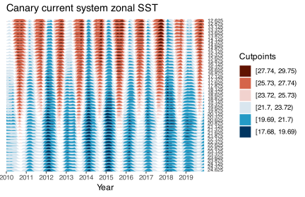

Task C
- Following on from Task B 9-10, create the necessary accompanying figures that support your EDA using descriptive statistics.
Ensure your presentation is professional and adhere to the standards required by scientific publications. Also, state the major aims of your analysis and the patterns you seek (you may include this with Task B 9-10 and simply refer that it in this answer). Using the combined findings from the EDA and the figures produced here, discuss the findings in a Results section.
Conclusion
In this Chapter I presented a glance at some of the figure types available to augment data summaries with visual data representations. Often, the judicious use of figures will enhance our data explorations at the start of a data analysis project.
The list of figures presented here is by no means exhaustive—please refer to the resources provided in Section 1 for more examples, many of which you will be able to apply to your own data. I especially recommend ggplot2: Elegant Graphics for Data Analysis, v.3 by Hadley Wickham, et al. and the R Graphics Cookbook, 2nd edition by Winston Chang for in-depth coverage of the modifications available to the graphs I outlined here.
Reuse
Citation
BibTeX citation:
@online{smit2021,
author = {Smit, AJ},
title = {3. {Exploring} with Figures},
date = {2021-01-01},
url = {https://tangledbank.netlify.app/BCB744/basic_stats/03-visualise.html},
langid = {en}
}
For attribution, please cite this work as:
Smit A (2021) 3. Exploring with figures. https://tangledbank.netlify.app/BCB744/basic_stats/03-visualise.html.